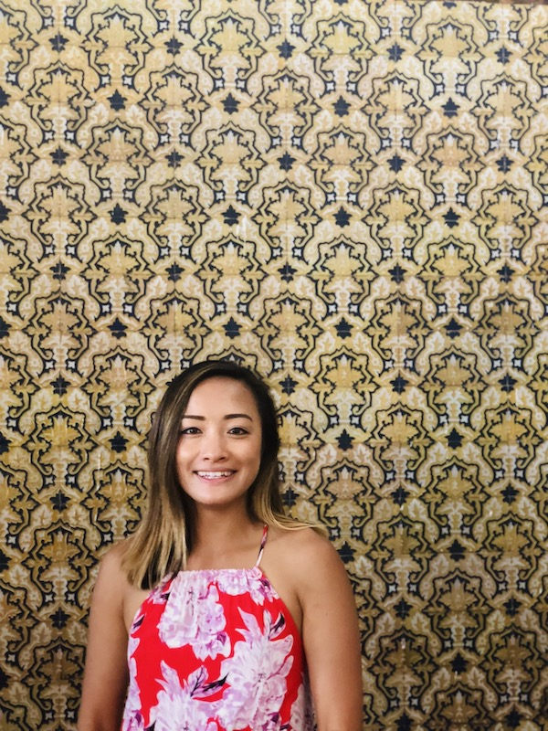

Welcome to my website! I am a San Francisco native who is on a journey to become a web developer. Before this, I was a for 6 years in the intensive care unit. I love the outdoors, my , and finding cool challenges to overtake. Whether it is overcoming a tough climb on my , learning to code, or figuring out how to design this website, I am always up for that thrill!